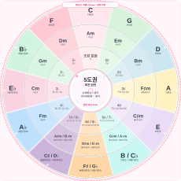
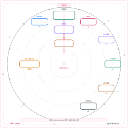
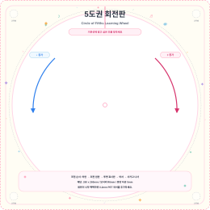
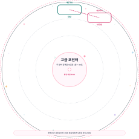

장조, 단조, 조표, 관계조, 딸림조, 버금딸림조, 다이어토닉 코드까지 한 번에 돌려 보는 음악 이론 교구
대상 초등 고학년부터 성인 입문자
운영 1:1 레슨, 소그룹 수업, 음악 이론 게임
구성 회전판, 표시판, 포인터, 미션 카드, 제작 도안

이 문서는 5도권 회전판을 실제 제품처럼 조립하고, 수업에서 일관되게 운영하기 위한 마스터 가이드입니다. 학습자는 원판을 돌리며 조표와 조 이름을 찾고, 이어서 관계조와 코드 기능을 직접 발견합니다.
핵심 원리: 원판의 한 칸은 5도권 1칸, 즉 30도입니다. 기준선에 조를 맞추면 주변 창이 자동으로 딸림조, 버금딸림조, 관계단조, 코드 기능을 읽어 줍니다.
지름 230mm. 바깥 원은 장조, 중간 원은 관계단조, 안쪽 원은 조표 개수와 실제 샵·플랫 음을 표시합니다.

260 x 260mm. 기준선, 현재 장조, 관계단조, 조표, IV, V, ii, vi, iii, vii° 창을 고정 표시합니다.

260 x 260mm. 회전 원판을 받치고 중앙 타공으로 전체 구조를 고정합니다. 모서리는 R6mm를 권장합니다.

지름 230mm 투명 포인터. 대상 코드와 V/대상 창의 간격을 30도로 두어 세컨더리 도미넌트를 찾습니다.
하판 중앙의 5mm 타공 위치를 확인하고, 네 귀퉁이에 미끄럼 방지 고무발을 붙입니다.
회전 원판을 하판 위에 올리고 중앙 타공을 맞춥니다. 원판이 기울면 창 위치가 어긋납니다.
투명 표시판의 기준선이 정확히 12시 방향을 향하게 놓습니다. 투명판은 회전하지 않고 고정되어야 합니다.
중앙에 와셔를 한 장 넣고 시카고 나사로 고정합니다. 너무 세게 조이면 회전감이 떨어집니다.
C, G, F를 기준선에 맞춰 각각 관계단조와 조표가 정확히 보이는지 확인합니다.
권장 재질: 하판 1.5-2.0mm 하드보드 또는 아크릴, 원판 0.8-1.0mm PP 또는 두꺼운 카드지, 투명판 0.5-0.7mm PET, 중앙 고정부 5mm 시카고 나사.
교사의 마무리 질문: “이 답을 어떻게 찾았나요?” 학생이 과정을 말할 수 있으면, 회전판은 단순 정답판이 아니라 사고 도구가 됩니다.
조표와 조 이름을 찾는다.
관계조와 조옮김을 설명한다.
코드 기능과 세컨더리 도미넌트를 적용한다.
본 PDF는 5도권 회전판 실물 도안 세트와 함께 사용하는 마스터 운영 문서입니다. 인쇄 배포 시 A4, 실제 크기 100% 출력 권장.
| 문제 | 원인 | 해결 |
|---|---|---|
| 창이 반 칸 어긋남 | 투명판 기준선 회전 | 투명판을 하판에 고정하고 재조립 |
| 원판이 잘 안 돌아감 | 중앙 나사 과조임 | 나사를 풀거나 얇은 와셔 추가 |
| 글자가 흐림 | 저해상도 출력 또는 잉크 번짐 | PDF 원본을 100%로 재출력 |
| 카드 앞뒤가 안 맞음 | 양면 인쇄 뒤집기 방향 오류 | 짧은 쪽 넘김/긴 쪽 넘김 테스트 후 출력 |
초도 샘플은 최소 3개를 만들어 회전감, 창 위치, 학생의 글자 판독성을 각각 확인하는 것이 좋습니다.
예시: C를 기준선에 맞추면 현재 장조는 C, 관계단조는 Am, 조표는 없음, 딸림조는 G, 버금딸림조는 F로 읽습니다.
| 장조 | 관계단조 | 개수 | 조표 | V | IV |
|---|---|---|---|---|---|
| C | Am | 0 | 없음 | G | F |
| G | Em | 1♯ | F♯ | D | C |
| D | Bm | 2♯ | F♯ C♯ | A | G |
| A | F♯m | 3♯ | F♯ C♯ G♯ | E | D |
| E | C♯m | 4♯ | F♯ C♯ G♯ D♯ | B | A |
| B / C♭ | G♯m / A♭m | 5♯ / 7♭ | F♯ C♯ G♯ D♯ A♯ | F♯ | E |
| F♯ / G♭ | D♯m / E♭m | 6♯ / 6♭ | F♯ C♯ G♯ D♯ A♯ E♯ | C♯ | B |
| D♭ | B♭m | 5♭ | B♭ E♭ A♭ D♭ G♭ | A♭ | G♭ |
| A♭ | Fm | 4♭ | B♭ E♭ A♭ D♭ | E♭ | D♭ |
| E♭ | Cm | 3♭ | B♭ E♭ A♭ | B♭ | A♭ |
| B♭ | Gm | 2♭ | B♭ E♭ | F | E♭ |
| F | Dm | 1♭ | B♭ | C | B♭ |
F♯ → C♯ → G♯ → D♯ → A♯ → E♯ → B♯
B♭ → E♭ → A♭ → D♭ → G♭ → C♭ → F♭
이명동음 조는 학습 단계에 따라 하나만 선택해도 됩니다. 초급은 C, G, D, A, E, F, B♭, E♭, A♭ 중심으로 운영하면 부담이 적습니다.
조표, 조 이름, 관계장조·관계단조를 찾는 카드입니다. 제한 시간 없이 정확히 읽는 것을 목표로 합니다.
딸림조, 버금딸림조, 같은 으뜸음조, 조옮김 거리 찾기를 다룹니다.
다이어토닉 코드, ii-V-I, 세컨더리 도미넌트, 단조의 V 코드를 다룹니다.
| 수준 | 관찰 기준 | 다음 과제 |
|---|---|---|
| 입문 | 기준선은 맞추지만 조표 읽기가 느림 | 초급 카드 1-6 반복 |
| 기초 | 장조와 관계단조를 같은 칸에서 읽음 | 딸림·버금딸림 창 추가 |
| 응용 | 조옮김 방향과 칸 수를 설명함 | I-IV-V 진행 만들기 |
| 심화 | 다이어토닉 코드와 V/대상을 찾음 | 짧은 코드 진행 분석 |
세컨더리 도미넌트는 “어떤 코드로 가고 싶은가”를 먼저 정한 뒤, 그 대상 코드의 딸림화음을 찾는 방식으로 설명하면 쉽습니다.
대상 G → 도미넌트 D7 → 해결 G
대상 Am → 도미넌트 E7 → 해결 Am
대상 Dm → 도미넌트 A7 → 해결 Dm
처음에는 “대상 코드를 먼저 고른다”는 말만 반복해도 충분합니다. 세컨더리 도미넌트는 출발점이 아니라 목적지 중심으로 찾는 개념입니다.
초급의 목표는 조표를 외우기 전에 “어디에 있는지 찾는 경험”을 충분히 만드는 것입니다. 학생이 직접 돌리고 읽게 하세요.
기준선에 C를 맞추고 조표 없음, C, Am을 읽습니다.
G, D, F, B♭을 맞추며 샵과 플랫 개수를 비교합니다.
미션 카드를 뽑고 조표만 보고 조 이름을 찾습니다.
“지금은 외우는 시간이 아니라 찾는 시간이에요. 기준선에 조를 맞추고, 안쪽 창에서 조표를 읽어 봅시다. 이제 반대로 조표를 보고 바깥 원의 조 이름을 찾아볼게요.”
중급에서는 5도권의 공간 감각을 사용합니다. 한 칸 이동이 곧 딸림·버금딸림 관계라는 것을 반복적으로 확인합니다.
관계단조와 같은 으뜸음 단조는 이름이 비슷해 혼동되기 쉽습니다. 관계단조는 같은 칸, 같은 으뜸음 단조는 별도 창으로 읽는다고 구분해 주세요.
고급 단계에서는 회전판을 코드 기능 지도처럼 사용합니다. 기준 조를 맞춘 뒤 I, ii, iii, IV, V, vi, vii° 창을 읽어 코드 진행을 만듭니다.
| 조 | I | ii | iii | IV | V | vi | vii° |
|---|---|---|---|---|---|---|---|
| C | C | Dm | Em | F | G | Am | Bdim |
| G | G | Am | Bm | C | D | Em | F♯dim |
| D | D | Em | F♯m | G | A | Bm | C♯dim |
| A | A | Bm | C♯m | D | E | F♯m | G♯dim |
| E | E | F♯m | G♯m | A | B | C♯m | D♯dim |
| F | F | Gm | Am | B♭ | C | Dm | Edim |
| B♭ | B♭ | Cm | Dm | E♭ | F | Gm | Adim |
| E♭ | E♭ | Fm | Gm | A♭ | B♭ | Cm | Ddim |
| A♭ | A♭ | B♭m | Cm | D♭ | E♭ | Fm | Gdim |
| D♭ | D♭ | E♭m | Fm | G♭ | A♭ | B♭m | Cdim |
기준선에 조를 맞춘 뒤 I, IV, V를 먼저 확인합니다. 이후 ii, vi, iii, vii°를 추가해 7개 다이어토닉 코드를 완성합니다.
I-vi-ii-V, I-IV-V-I, ii-V-I 같은 진행을 카드 미션으로 제시하고, 학생이 직접 회전판에서 읽어 쓰게 합니다.